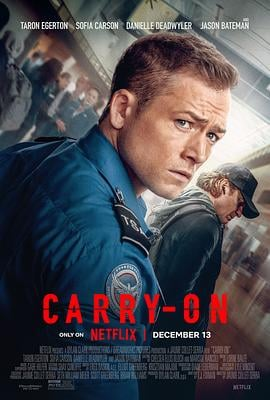

6.5
随身危机
Carry-On
2024
美国
评分 6.5
导演:
佐米·希尔拉
演员:
塔伦·埃哲顿 / 杰森·贝特曼 / 索菲亚·卡尔森 / 丹妮尔·戴德怀勒 / 西奥·罗西 / 罗根·马歇尔-格林
类型:
剧情,动作,悬疑,惊悚
剧情简介
圣诞前夕的机场本该人潮拥挤、节日气息浓郁，却因为一个随身包裹而陷入危险的漩涡。年轻的运输安全局员工伊森·洛克（塔伦·埃哲顿 饰）正准备结束一天的工作，却被一位神秘男子（杰森·贝特曼 饰）拦下，对方语气平静、礼貌，却透露出某种不容拒绝的威胁。他递出的行李箱不大，却足以改变整趟航班、整个夜晚，甚至伊森的人生。伊森起初以为这只是一次普通的安检异常，直到那名男子轻描淡写地说出了他的住址、家人信息，甚至他不愿提起的过去。巨大的恐惧和压力将他死死困在岗位——他被勒索，必须让这件危险包裹登机，否则后果不堪设想。影片将大部分情节压缩在机场这一封闭空间：高压安检线、阴暗员工通道、无人机监控盲区、候机大厅的节日装饰，都成为紧张叙事的一部分。伊森一边执行程序、一边试图逆转局势，他的每个选择都像踩在玻璃边缘。与此同时，那位穿着笔挺外套的神秘男子，既不像恐怖分子，也不像普通旅客，他的举止沉着、话语精准，仿佛掌控着一盘别人看不清的棋局。故事在他们的暗战中不断升级：— 伊森试图报警，却发现对方已提前布下陷阱— 他想偷偷调换行李，却差点暴露— 每一次试图挣脱，都让局势变得更糟影片的亮点在于节奏紧凑、氛围持续压迫，同时把“普通人被逼到极限”的情绪展现得格外真实。镜头捕捉伊森在洗手间镜前的颤抖、在安检台下悄声换气、在监控死角匆忙做出决定；而那名旅客始终从容，像猎人般等待他的下一次失误。如果你喜欢那种在封闭空间中不断升级的悬疑感、角色心理逐渐紧绷的惊悚叙事，《随身危机》会让你体验一次“随身行李里装着秘密，而秘密随时会引爆”的强烈压力。